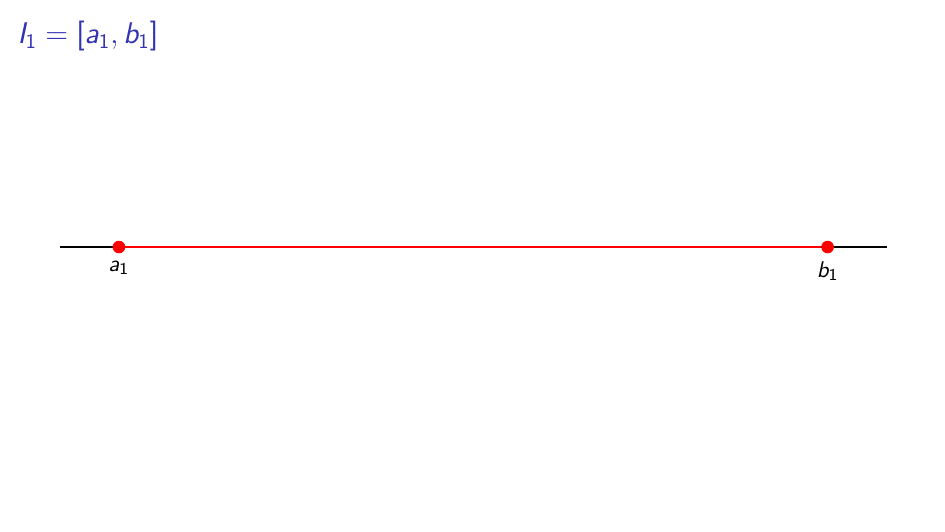
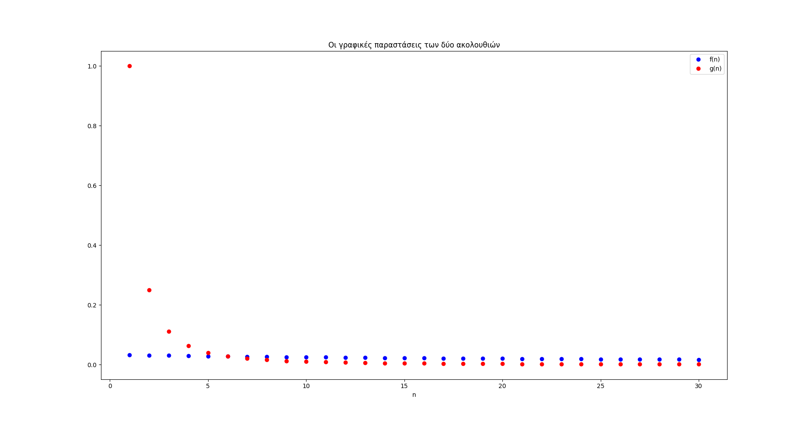
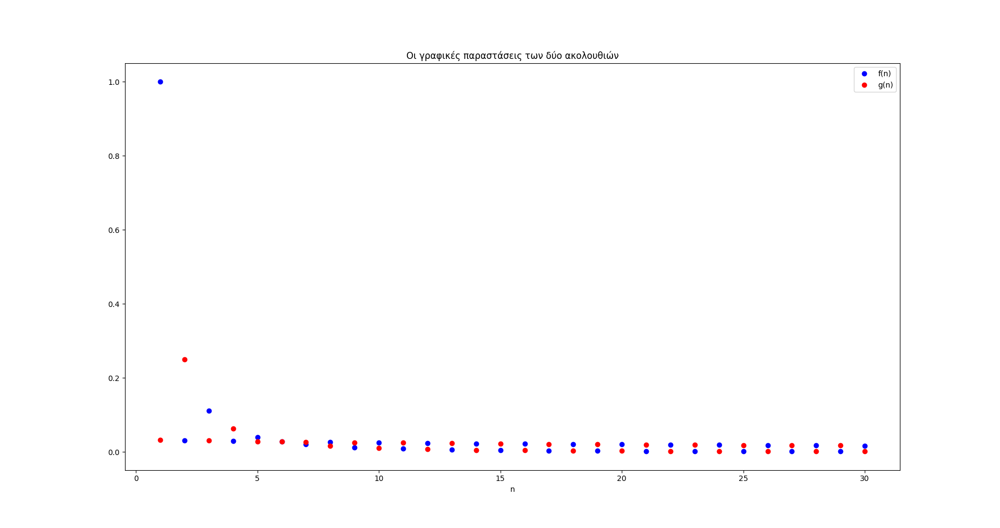
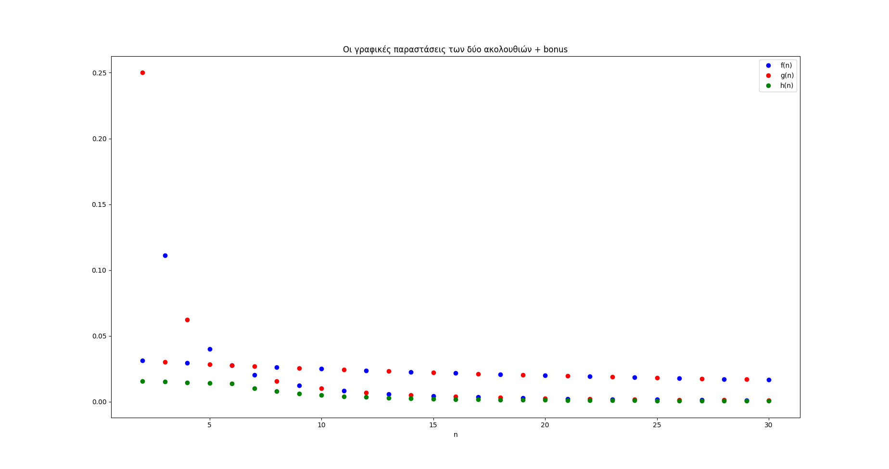

Τα πολλά πρόσωπα του αξιώματος της πληρότητας (3β)#
Ο πίνακας Δύο γυναίκες συζητούν δίπλα στη θάλασσα του Camille Pissarro.#
Πριν από λίγες εβδομάδες συζητήσαμε για μία διατύπωση του αξιώματος της πληρότητας χρησιμοποιώντας ένα γνωστό και μη εξαιρετέο θεώρημα του Cantor - για περισσότερα, δείτε εδώ. Με βάση τώρα αυτήν την διατύπωση μέσα από ακολουθίες κλειστών διαστημάτων πραγματικών αριθμών θα παρουσιάσουμε και μία κατασκευή των πραγματικών αριθμών από τους ρητούς που βασίζεται σε ακολουθίες κλειστών διαστημάτων ρητών αριθμών. Η εν λόγω κατασκευή διαφέρει σε επίπεδο τεχνικής από τις άλλες δύο που είδαμε - μέσω τομών Dedekind και βασικών ακολουθιών ρητών αριθμών - καθώς χρησιμοποιεί νέες έννοιες και εργαλεία, κάπως πιο περίπλοκα δομικά από όσα έχουμε δει ως τώρα.
Η ιδέα της κατασκευής#
Όπως είπαμε, η ιδέα της κατασκευής θα βασιστεί πάνω σε ακολουθίες κλειστών διαστημάτων ρητών αριθμών οι οποίες θα θυμίζουν το θεώρημα των εγκιβωτισμένων διαστημάτων του Cantor. Είναι σημαντικό εδώ να θυμηθούμε πώς περίπου δρα το θεώρημα των εγκιβωτισμένων διαστημάτων δίνοντας την ύπαρξη συγκεκριμένων πραγματικών αριθμών. Αρχικά, ας ξαναθυμηθούμε το ίδιο το θεώρημα:
Ο τρόπος που ουσιαστικά το παραπάνω θεώρημα μας εγγυάται την ύπαρξη των αρρήτων φαίνεται στο παρακάτω σχήμα:

Γεμίζουμε τις τρύπες με τις τομές των διαστημάτων#
Πρακτικά, αυτό που μας λέει το θεώρημα είναι ότι όποια ακολουθία διαστημάτων κι αν πάρουμε που συμπεριφέρεται όπως στο παραπάνω σχήμα αυτή τελικά θα συγκλίνει σε ένα μονοσύνολο. Με άλλα λόγια, θα υπάρχει ένας πραγματικός αριθμός που να ανήκει σε όλα αυτά τα διαστήματα - στριμωγμένος εκεί ανάμεσα σε όλα αυτά τα \(a_n\) και τα \(b_n.\) Επομένως, κάθε φθίνουσα ακολουθία κλειστών διαστημάτων που η διάμετρός τους συγκλίνει προς το μηδέν μας δίνει κι από έναν πραγματικό αριθμό - ίσως βέβαια κάποιες να δίνουν τον ίδιο.
Θα είναι χρήσιμο, λοιπόν, να θεωρήσουμε αρχικά το σύνολο:
Πιο απλά, το \(\mathcal{I}\) είναι το σύνολο όλων των κλειστών διαστημάτων ρητών. Τώρα, από αυτά τα διαστήματα θα φτιάξουμε φθίνουσες ακολουθίες διαστημάτων θεωρώντας το σύνολο:
όπου με \(\ell(I)\) συμβολίζουμε το μήκος - δηλαδή, τη διάμετρο - ενός διαστήματος \(I.\) Τα στοιχεία του \(\mathcal{J}\) είναι, πρακτικά, όλες οι φθίνουσες ακολουθίες ρητών διαστημάτων που θα μας απασχολήσουν. Το θεώρημα των εγκιβωτισμένων διαστημάτων του Cantor μας παρακινεί να θεωρήσουμε επίσης και το σύνολο:
Το παραπάνω σύνολο, ουσιαστικά, αποτελείται από τις τομές όλων των φθινουσών ακολουθιών κλειστών ρητών διαστημάτων - με διάμετρο που τείνει στο μηδέν. Η πρόθεσή μας είναι ξεκάθαρη: θα θέλαμε πολύ το παραπάνω σύνολο να αποτελεί το σύνολο των πραγματικών αριθμών δεδομένου ότι κάθε τέτοια τομή πραγματικών διαστημάτων - και όχι ρητών - δίνει κι έναν πραγματικό αριθμό. Ωστόσο, η αγνή αυτή πρόθεσή μας θα παραμείνει μάλλον μία απλή πρόθεση, καθώς τα στοιχεία του συνόλου \(\mathcal{J}_0\) είναι πολύ λίγα για να περιγράψουν τους πραγματικούς αριθμούς.
Πράγματι, ας πάρουμε μία αποσβένουσα ακολουθία ρητών διαστημάτων \((I_n)_n\in\mathcal{J},\) και ας θεωρήσουμε την τομή των στοιχείων της:
Επειδή τα \(I_n\) περιέχουν όλα τους αποκλειστικά ρητούς αριθμούς, και το \(I_0\) περιέχει αποκλειστικά ρητούς αριθμούς. Από την άλλη, η συνθήκη \(\ell(I_n)\to0\) - όπως είδαμε κι εδώ - μας περιορίζει ως προς το πόσα στοιχεία θα περιέχει η τομή όλων των παραπάνω διαστημάτων, \(I_0.\) Για την ακρίβεια, το \(I_0\) θα περιέχει το πολύ έναν (ρητό) αριθμό - δηλαδή θα είναι ή κενό ή μονοσύνολο. Όμως, πόσα μονοσύνολα μπορούμε να κατασκευάσουμε με ρητούς αριθμούς; Σαφώς, τόσα όσοι και οι ρητοί αριθμοί - δηλαδή, υπάρχει ένα αριθμήσιμο πλήθος μη κενών τομών στο \(\mathcal{J}_0.\) Αν βάλουμε και το κενό σύνολο, τότε παίρνουμε και πάλι ένα αριθμήσιμο πλήθος από σύνολα - άλλωστε, ένας κούκος δε φέρνει την άνοιξη. Συνεπώς, έχουμε:
Μάλιστα, στην παραπάνω σχέση ισχύει ισότητα (γιατί;) αλλά δε μας απασχολεί (γιατί;). Όπως και να έχει, το \(\mathcal{J}_0\) είναι ένα αριθμήσιμο σύνολο και άρα δε γίνεται να το ταυτίσουμε με κάποιον τρόπο με τους πραγματικούς αριθμούς, οι οποίοι είναι υπεραριθμήσιμοι στο πλήθος - για περισσότερα, δείτε εδώ.
Συνεπώς, δεν μπορούμε απλώς να πάρουμε όλες τις ακολουθίες του \(\mathcal{J}\) και να κρατήσουμε τις τομές τους, όπως θα θέλαμε, διότι, πολύ απλά, χάνουμε πολλά στον δρόμο. Άρα, πρέπει να σκεφτούμε κάποιον πιο περίτεχνο και εμπνευσμένο τρόπο για να μπορέσουμε, με τη βοήθεια πάντα των ακολουθιών του \(\mathcal{J},\) να περιγράψουμε όλους τους πραγματικούς αριθμούς - δηλαδή, να κατασκευάσουμε ένα σύνολο με ανάλογες ιδιότητες.
Τροποποιώντας την αρχική ιδέα μας#
Λοιπόν, πήραμε κλειστά διαστήματα ρητών, πήραμε και ακολουθίες από αυτά, πήραμε και τις τομές τους και κάναμε, τελικά, μία τρύπα στο νερό. Το βασικό - θεμελιώδες, θα λέγαμε - πρόβλημα που αντιμετωπίσαμε παραπάνω βρίσκεται στο γεγονός ότι το \(\mathcal{J}_0\) περιέχει ελάχιστα στοιχεία - τόσο λίγα που δεν αρκούν παρά για να μιλήσουμε για τους ρητούς αριθμούς. Συνεπώς, αν θέλουμε να χρησιμοποιήσουμε κάπως τις ακολουθίες του \(\mathcal{J}\) πρέπει πρώτα να τις επεξεργαστούμε με κάποιον τρόπο και να τις μετασχηματίσουμε σε ένα άλλο σύνολο - όπως περίπου κάναμε και με τις βασικές ακολουθίες ρητών στην αντίστοιχη κατασκευή των πραγματικών αριθμών.
Κομβικό ρόλο στα παρακάτω θα παίξει η εξής απλή, σε γενικές γραμμές, παρατήρηση. Υπάρχουν αποσβένουσες ακολουθίες κλειστών ρητών διαστημάτων οι οποίες μοιάζουν πολύ περισσότερο μεταξύ τους από ό,τι άλλες. Για παράδειγμα, ας θεωρήσουμε τις ακολουθίες:
Αυτές οι δύο ακολουθίες κλειστών διαστημάτων, αν και φαίνονται κάπως διαφορετικές, επί της ουσίας είναι ίδιες. Για αρχή, η τομές των όρων και των δύο ακολουθιών είναι το ίδιο σύνολο, αφού:
Επίσης, αν σχεδιάσουμε τις γραφικές παραστάσεις των συναρτήσεων \(f(n)=\dfrac{1}{n+30}\) και \(g(n)=\dfrac{1}{n^2}\) τότε παίρνουμε ένα σχήμα σαν το παρακάτω:

Τα άνω άκρα των παραπάνω διαστημάτων.#
Όπως φαίνεται και παραπάνω, αν και αρχικά οι όροι της ακολουθίας \(f(n)\) είναι μικρότεροι, ωστόσο από τον έβδομο όρο και μετά οι όροι της ακολουθίας \(g(n)\) είναι διαρκώς μικρότεροι. Αυτό έχει σαν αποτέλεσμα, τελικά, τα διαστήματα της ακολουθίας \((J_n)_n\) να περιέχονται στα διαστήματα της ακολουθίας \(I_n.\) Αυτή η συνθήκη, όπως μπορεί κανείς εύκολα να δει, είναι ικανή συνθήκη που οδηγεί στο να έχουν και οι δύο ακολουθίες διαστημάτων την ίδια τομή - δεδομένου ότι αμφότερες είναι ακολουθίες από το \(\mathcal{J}.\) Ωστόσο, τα πράγματα δε χρειάζεται να είναι τόσο τακτοποιημένα. Ας σκεφτούμε δύο ακολουθίες \(f(n),g(n)\) με γραφήματα όπως τα παρακάτω:

Μπλέξαμε τα μπούτια μας…#
Αυτό που κάναμε ήταν πρακτικά να ανακατέψουμε τους όρους με περιττό δείκτη των δύο ακολουθιών που είχαμε παραπάνω. Έτσι πήραμε δύο ακολουθίες που δεν έχουν την παραπάνω ιδιότητα - να είναι δηλαδή η μία τελικά μικρότερη της άλλης - ωστόσο, αν \(I_n=[0,f(n)]\) και \(J_n=[0,g(n)]\) τότε και πάλι οι τομές των δύο ακολουθιών διαστημάτων που προκύπτουν είναι ίσες. Αυτό που κρύβεται πίσω από αυτήν εδώ την πεπλεγμένη περίπτωση είναι το γεγονός ότι, ενώ δεν υπάρχει κάποια τάξη στα διαστήματα που προκύπτουν από τις παραπάνω δύο ακολουθίες, μπορούμε να την… επιβάλλουμε εμείς - δεν είναι πολιτικό σχόλιο αυτό. Το «πώς» φαίνεται στο παρακάτω σχήμα - δεν έχουμε σχεδιάσει τους πρώτους όρους των ακολουθιών γιατί δεν έβγαινε ωραίο το σχήμα:

Εντάξει, δεν κερδίσαμε και πολλά σε θέμα οπτικοποίησης, τελικά…#
Η πράσινη ακολουθία που σχεδιάσαμε παραπάνω - ας την πούμε \(h(n)\) - είναι διαρκώς μικρότερη και από την μπλε και από την κόκκινη ακολουθία. Αν τώρα θεωρήσουμε τα διαστήματα \(K_n=[0,h(n)]\) τότε σαφώς αυτά περιέχονται τόσο στα \(I_n\) όσο και στα \(J_n\) για κάθε \(n\in\mathbb{N}.\) Αυτό εύκολα μπορείτε να δείτε πώς οδηγεί και πάλι στο ίδιο συμπέρασμα - ότι οι δύο ακολουθίες έχουν την ίδια τομή.
Όλα τα παραπάνω μας δίνουν την εξής ιδέα, την οποία εκφράζουμε μέσω των παρακάτω ορισμών:
Η ακολουθία διαστημάτων \((I_n)_n\) θα λέγεται εκλέπτυνση (ή απλά λεπτότερη) της \((J_n)_n\) αν για κάθε \(n\in\mathbb{N}\) ισχύει \(I_n\subseteq J_n.\)
Πρακτικά, μία ακολουθία είναι λεπτότερη από μία άλλη αν όλα τα διαστήματά της είναι υποσύνολα των αντίστοιχων διαστημάτων της άλλης - άρα, κατά μία έννοια, είναι πράγματι λεπτότερη. Με τη βοήθεια του παραπάνω ορισμού μπορούμε να δώσουμε και τον ακόλουθο ορισμό:
Θα λέμε ότι δύο ακολουθίες διαστημάτων \((I_n)_n,(J_n)_n\in\mathcal{J}\) είναι ισοδύναμες και θα γράφουμε \((I_n)_n\simeq(J_n)_n\) αν υπάρχει μία άλλη ακολουθία \((K_n)_n\in\mathcal{J}\) η οποία να είναι λεπτότερη και από τις δύο.
Πρακτικά, ο τελευταίος ορισμός καλύπτει στη γενική περίπτωση αυτό που είδαμε αρκετά ειδικά παραπάνω. Είναι αρκετά απλό να δει κανείς ότι η παραπάνω σχέση που ορίσαμε ανάμεσα στις ακολουθίες του \(\mathcal{J}\) είναι πράγματι μία σχέση ισοδυναμίας, δηλαδή ότι ισχύουν τα εξής:
\((I_n)_n\simeq(I_n)_n\) για κάθε \((I_n)_n\in\mathcal{J},\)
\((I_n)_n\simeq(J_n)_n\Rightarrow(J_n)_n\simeq(I_n)_n\) για κάθε \((I_n)_n,(J_n)_n\in\mathcal{J},\)
αν \((I_n)_n\simeq(J_n)_n\) και \((J_n)\simeq (K_n)_n\) τότε \((I_n)_n\simeq(K_n)_n\) για κάθε \((I_n)_n,(J_n)_n,(K_n)_n\in\mathcal{J}.\)
Τώρα, θεωρούμε το σύνολο πηλίκο όλων των κλάσεων ισοδυναμίας που προκύπτουν από την παραπάνω σχέση:
Αυτό το σύνολο \(\frak{A}\) θα αποδείξουμε ότι μπορεί να παίξει πολύ καλά τον ρόλο των πραγματικών αριθμών.
Πριν όμως το αποδείξουμε, ας δούμε λίγο τι διαφορετικό κάναμε εδώ από ότι στην πρώτη μας απόπειρα να ορίσουμε ένα καλό σύνολο ως το επίδοξο σύνολο των πραγματικών αριθμών. Αρχικά, ταυτίσαμε όλες εκείνες τις ακολουθίες διαστημάτων που είχαν την ίδια τομή. Αυτό είχε ως αποτέλεσμα, αφενός, όλες οι ακολουθίες που είχαν ως τομή κάποιο μονοσύνολο που περιείχε έναν μόνο ρητό να ταυτιστούν - κάτι που δεν είναι κακό. Όμως, με αυτόν τον τρόπο και όλες οι άλλες ακολουθίες που θα θέλαμε να τις ταιριάξουμε με τους άρρητους συμπεριλήφθηκαν στην ίδια κατηγορία, καθώς όλες τους είχαν κενή τομή. Ωστόσο, εμείς δε θα θέλαμε με κανέναν τρόπο να ταυτίσουμε όλες τις αποσβένουσες ακολουθίες ρητών διαστημάτων με κενή τομή μεταξύ τους. Αντιθέτως, θα θέλαμε να ταυτίσουμε μόνο αυτές που τελικά περιγράφουν τον ίδιο άρρητο - δηλαδή, αν μιλούσαμε για πραγματικά διαστήματα αντί για ρητά, τότε θα είχαν όλες τους ως τομή τον ίδιο άρρητο αριθμό \(r.\)
Αυτό το καταφέραμε με τη δεύτερη προσέγγισή μας. Εδώ πάλι ταυτίσαμε όλες τις ακολουθίες διαστημάτων που είχαν ως τομή κάποιο (το ίδιο) ρητό μονοσύνολο όπως παραπάνω, ωστόσο μεταχειριστήκαμε πολύ διαφορετικά τις υπόλοιπες ακολουθίες. Για την ακρίβεια, αντί να αναφερθούμε άμεσα στην τομή μίας ακολουθίας, κάτι που όπως είδαμε παραπάνω δεν οδηγεί κάπου, περιγράψαμε αυτήν την ιδιότητα της κοινής τομής - ακόμα κι όταν αυτήν δεν υπάρχει στους ρητούς αλλά «γνωρίζουμε» ότι θα υπάρχει στους πραγματικούς - μέσα από την ύπαρξη κοινής λεπτότερης ακολουθίας. Αυτό μας επιτρέπει αφενός να ταυτίσουμε ακολουθίες διαστημάτων που τελικά τα στοιχεία τους συσσωρεύονται γύρω από έναν άρρητο αριθμό - μία «τρύπα» στην ευθεία των ρητών αριθμών, δηλαδή - αλλά μας εμποδίζει από το να ταυτίσουμε όλες αυτές τις ακολουθίες που τελικά θα έχουν κοινή τομή και άρα δεν πέφτουμε στην παγίδα της προηγούμενης περίπτωσης.
Ώρα για αποδείξεις…#
Ας περάσουμε τώρα στις λεπτομέρειες της κατασκευής του συνόλου των πραγματικών αριθμών. Όπως έχουμε δει και σε άλλες κατασκευές που έχουμε κάνει ως τώρα, πρέπει πριν από όλα να ορίσουμε με φυσιολογικό τρόπο τις πράξεις πάνω στο σύνολο \(\frak{A}\) που έχουμε ορίσει καθώς επίσης και μία σχέση διάταξης. Θυμηθείτε ότι το σύνολο \(\frak{A}\) αποτελείται από κλάσεις ισοδυναμίας αποσβενουσών ακολουθιών κλειστών ρητών διαστημάτων, οπότε οι πράξεις που θα ορίσουμε καθώς και η σχέση διάταξης θα αφορούν τέτοια πράγματα.
Ξεκινάμε πρώτα με την πρόσθεση, την οποία θα ορίσουμε, αρχικά, για απλά διαστήματα. Αν \(I,J\) είναι δύο ρητά διαστήματα τότε ορίζουμε το άθροισμά τους ως εξής:
Είναι σαφές ότι το \(I+J\) είναι ένα διάστημα με άκρα τα αθροίσματα των αντίστοιχων άκρων των επιμέρους διαστημάτων. Τώρα, εντελώς φυσιολογικά μπορούμε να ορίσουμε το άθροισμα δύο ακολουθιών διαστημάτων \((I_n)_n,(J_n)_n\) ως εξής:
Με ανάλογο τρόπο, ορίζουμε το άθροισμα δύο κλάσεων \([(I_n)_n],[(J_n)_n]\in A\) ως εξής - θα γράφουμε \([I_n],[J_n]\) για τις κλάσεις για να απλοποιήσουμε τον συμβολισμό:
Εδώ καλό θα ήταν να μην προχωρήσουμε έτσι ελαφρά τη καρδία αλλά να επαληθεύσουμε ότι πράγματι η παραπάνω πρόσθεση μεταξύ κλάσεων είναι καλώς ορισμένη, καθώς ενδέχεται το αποτέλεσμα της πράξης να εξαρτάται από το ποιες συγκεκριμένα ακολουθίες \((I_n)_n,(J_n)_n\) θα επιλέξουμε - και άρα το άθροισμα δύο κλάσεων να μην είναι μονοσήμαντα ορισμένο. Έστω, λοιπόν, \((K_n)_n,(L_n)_n\in\mathcal{J}\) τέτοιες ώστε \((I_n)_n\sim(K_n)_n\) και \((J_n)_n\sim(L_n)_n.\) Αυτό σημαίνει ότι υπάρχουν κοινές εκλεπτύνσεις \((A_n)_n,(B_n)_n\) των \((I_n)_n,(K_n)_n\) και \((J_n)_n,(L_n)_n\) αντίστοιχα. Θεωρούμε τώρα την ακολουθία \((A_n+B_n)_n\) η οποία, αφενός, είναι μία αποσβένουσα ακολουθία κλειστών ρητών διαστημάτων και, αφετέρου, είναι μία ακολουθία που αποτελεί κοινή εκλέπτυνση των \((I_n+J_n)_n\) και \((K_n+L_n)_n.\)
Πράγματι, αρχικά, έχουμε για κάθε \(n\in\mathbb{N}:\)
Από εδώ και από τον ορισμό του αθροίσματος διαστημάτων έχουμε άμεσα τα εξής:
για κάθε \(n\in\mathbb{N}.\) Συνεπώς, πράγματι η \((A_n+B_n)_n\) είναι η ζητούμενη κοινή εκλέπτυνση, άρα:
οπότε η πρόσθεση μεταξύ κλάσεων είναι καλά ορισμένη.
Τώρα είναι εύκολο να αποδείξουμε τόσο την προσεταιριστική όσο και την αντιμεταθετική ιδιότητα της πρόσθεσης στο \(\frak{A}.\) Μένει να ορίσουμε ένα ουδέτερο στοιχείο καθώς και την αντίθετη κλάση μίας κλάσης. Η αλήθεια είναι ότι ούτε αυτό είναι δύσκολο. Θεωρούμε τη (σταθερή) ακολουθία διαστημάτων \(I_n=\{0\}\) - τα μονοσύνολα είναι κλειστά διαστήματα, αφού \(\{a\}=[a,a]\) - και ορίζουμε ως το ουδέτερο στοιχείο της πράξης μας την κλάση \([\{0\}].\) Είναι σαφές ότι αν πάρουμε μία άλλη κλάση \([I_n]\) τότε, επειδή \(I_n+\{0\}=I_n\) έχουμε άμεσα:
άρα πράγματι η κλάση \([\{0\}]\) είναι το ουδέτερο στοιχείο της πράξης μας. Τώρα, εύκολα βλέπουμε ότι αν ορίσουμε για ένα διάστημα \(I\) το αντίθετό του να είναι το:
έχουμε την εξής σχέση:
Πράγματι, αν σταθεροποιήσουμε ένα \(n\in\mathbb{N}\) τότε παρατηρούμε ότι:
οπότε υπάρχει μία κοινή εκλέπτυνση με την ακολουθία \((\{0\})_n\) - η ίδια η ακολουθία - άρα πράγματι \([I_n+(-I_n)]=[\{0\}].\)
Με τον εντελώς ανάλογο τρόπο μπορούμε να ορίσουμε και τον πολλαπλασιασμό μεταξύ κλάσεων. Αρχικά, αν \(I,J\) είναι δύο διαστήματα ρητών αριθμών τότε ορίζουμε το γινόμενό τους ως εξής:
Τώρα, φυσιολογικά ορίζουμε το γινόμενο μεταξύ ακολουθιών διαστημάτων ως εξής:
Επομένως, φυσιολογικά ορίζουμε και το γινόμενο μεταξύ κλάσεων ως εξής:
Εύκολα μπορούμε να δείξουμε, όπως και προηγουμένως, ότι το παραπάνω γινόμενο είναι καλά ορισμένο και ανεξάρτητο από την επιλογή των αντιπροσώπων - με παρόμοιο τρόπο με την πρόσθεση. Εύκολα επίσης αποδεικνύονται και η αντιμεταθετική και η προσεταιριστική ιδιότητα του πολλαπλασιασμού, αλλά και η επιμεριστική ιδιότητα μεταξύ πρόσθεσης και πολλαπλασιασμού. Εντελώς φυσιολογικά, επίσης, μπορεί να ορίσει κανείς και το ουδέτερο στοιχείο του πολλαπλασιασμού, ως την κλάση \([\{1\}].\) Είναι εύκολο να παρατηρήσει κανείς ότι για κάθε διάστημα \(I\) ισχύει:
άρα και \([I_n][\{1\}]=[I_n].\) Από όλες τις ιδιότητες, αυτή που έχει ενδιαφέρον είναι η ύπαρξη του αντιστρόφου. Αρχικά, πρέπει να δούμε τι είναι μία μη μηδενική κλάση του \(\frak{A}.\) Έστω, λοιπόν, \([I_n]\neq[\{0\}],\) άρα δεν υπάρχει κοινή εκλέπτυνση ανάμεσα στην \((I_n)_n\) και την \((\{0\})_n.\) Τώρα, η μόνη πιθανή κοινή εκλέπτυνση των δύο παραπάνω ακολουθιών θα ήταν η \((\{0\})_n,\) οπότε το παραπάνω μάς λέει ότι η \((\{0\})_n\) δεν είναι εκλέπτυνση της \((I_n)_n.\) Συνεπώς, υπάρχει κάποιος δείκτης \(m\) έτσι ώστε \(0\not\in I_m\) και, λόγω της μονοτονίας της \(I_n,\) έχουμε ότι για κάθε \(n\geq m\) ισχύει \(0\not\in I_n.\)
Συνεχίζοντας, για μία μη μηδενική κλάση \([I_n],\) έστω \(m\) ο δείκτης από τον οποίο και μετά όλα τα διαστήματα της ακολουθίας δεν περιέχουν το μηδέν. Τώρα, για ένα διάστημα \(I\) που δεν περιέχει το μηδέν ορίζουμε, γενικά:
Τέλος, για την παραπάνω ακολουθία διαστημάτων ορίζουμε την ακολουθία:
όπου \(K_n\) είναι τα διαστήματα που προκύπτουν από τα \(I_n\) αν διατηρήσουμε μόνο τα αντίστροφα των στοιχείων που είναι ομόσημα με τα στοιχεία του \(I_m\) για κάθε \(n=1,2,\ldots,m-1.\) Δηλαδή, αν π.χ. τα στοιχεία του \(I_m\) είναι όλα τους αρνητικά τότε κρατάμε τα αρνητικά στοιχεία από κάθε \(I_n\) και τα αντιστρέφουμε. Δεδομένου ότι \(I_n\supseteq I_m\) για κάθε \(n=1,2,\ldots,m-1\) έπεται ότι και η \(J_n\) είναι φθίνουσα ακολουθία ενώ το γεγονός ότι είναι και αποσβένουσα έπεται από τη συνέχεια της \(\dfrac{1}{x}\) - ή, αν φανούμε λίγο παραπάνω σχολαστικοί και αποφύγουμε την επίκληση στη συνέχεια της \(\dfrac{1}{x},\) μπορούμε να μιμηθούμε την απόδειξη της συνέχειας της \(\dfrac{1}{x}\) για να αποδείξουμε ότι η \((J_n)_n\) είναι αποσβένουσα.
Είναι σχετικά απλό, τώρα, να επαληθεύσει κανείς ότι η ακολουθία \((\{1\})_n\) είναι μία εκλέπτυνση της \((I_nJ_n)_n\) οπότε και \([I_nJ_n]=[\{1\}].\)
Ουφ! Ορίσαμε τις πράξεις, βγήκαν τα εννιά αλγεβρικά αξιώματα όπως θα θέλαμε, μένει τώρα η διάταξη και το αξίωμα της πληρότητας. Για τη διάταξη, αν \([I_n],[J_n]\in A\) τότε θα λέμε ότι \([I_n]<[J_n]\) αν και μόνον αν υπάρχει κάποιο \(m\) έτσι ώστε για κάθε \(x\in I_m\) και \(y\in J_m\) να ισχύει \(x<y.\) Με τις παραπάνω πράξεις δεν είναι παρά υπόθεση ρουτίνας να αποδείξουμε και τα συνήθη αξιώματα της διάταξης - ωστόσο, δε θα το κάνουμε γιατί πολύ κουραστήκαμε ως τώρα.
Η απόδειξη του αξιώματος της πληρότητας#
Περνάμε τώρα στο ζουμερότερο όλων των αξιωμάτων, που δεν είναι άλλο από αυτό της πληρότητας. Μπορούμε να αποδείξουμε οποιαδήποτε από τις τρεις μορφές του που έχουμε δει ως τώρα ότι είναι ισοδύναμες, ωστόσο, κυρίως για λόγους απλότητας, θα αποδείξουμε τη συνήθη μορφή του. Έστω, λοιπόν, ένα μη κενό υποσύνολο \(\mathcal{B}\) του \(\frak{A}\) το οποίο υποθέτουμε ότι είναι και άνω φραγμένο. Θα αποδείξουμε ότι το \(\mathcal{B}\) έχει ένα ελάχιστο άνω φράγμα.
Αρχικά, επειδή το \(\mathcal{B}\) είναι μη κενό, υπάχει κάποια κλάση \([B_n]\in\mathcal{B}.\) Από την άλλη, επειδή είναι άνω φραγμένο υπάρχει μία κλάση \([C_n]\in A\) έτσι ώστε για κάθε κλάση \([I_n]\in\mathcal{B}\) να ισχύει \([I_n]\leq[C_n].\) Από εδώ κι έπειτα, η απόδειξη περιπλέκεται αρκετά, είναι η αλήθεια. Αρχικά, θα κατασκευάσουμε το supremum ενός άλλου συνόλου, το οποίο μετά θα δείξουμε ότι είναι το ίδιο με το supremum του συνόλου που μας απασχολεί. Παρατηρούμε πρώτα ότι η ζουμερή περίπτωση είναι αυτή όπου το \(\mathcal{B}\) περιέχει άπειρα στο πλήθος στοιχεία μεγαλύτερα της \([B_n]\) καθώς σε αντίθετη περίπτωση επιλέγουμε απλώς το μεγαλύτερο από τα πεπερασμένα στο πλήθος στοιχεία που είναι μεγαλύτερα της \([B_n].\)
Πριν συνεχίσουμε την απόδειξή μας, ας συμφωνήσουμε να κάνουμε μία ακόμα απλοποίηση του συμβολισμού γιατί αν συνεχίσουμε έτσι παρακάτω θα μας βγουν τα μάτια. Γενικά, θα κρατήσουμε τον απλοποιημένο συμβολισμό \([I_n]\) για τις κλάσεις του \(\frak{A},\) ωστόσο θα επιλέξουμε να απλοποιήσουμε τον συμβολισμό έτι περαιτέρω όταν πρόκειται για κλάσεις που αναπαριστού ρητούς αριθμούς. Αντί να γράφουμε \([\{q\}]\) για μία κλάση που έχει ως αντιπρόσωπο τη σταθερή ακολουθία \((\{q\})_n,\) θα γράφουμε απλώς \(q\) εκτός αν υπάρχει κίνδυνος να δημιουργηθεί σύγχυση με τον ρητό αριθμό \(q.\) Αυτό γίνεται τόσο για λόγους απλότητας όσο και για λόγους εννοιολογικούς καθώς, πράγματι, στην κατασκευή που έχουμε κάνει, αυτές οι κλάσεις ταυτίζονται με τους ρητούς αριθμούς και, άρα, έχει νόημα να τους συμβολίζουμε ως τέτοιους.
Συνεχίζουμε τώρα με το πρώτο μέρος της απόδειξης του αξιώματος της πληρότητας. Όπως είπαμε, θα ορίσουμε ένα άλλο σύνολο κλάσεων του οποίου το supremum - το οποίο θα δείξουμε ότι υπάρχει - θα συμπίπτει με αυτό το συνόλου \(\mathcal{B}.\) Η κατασκευή του παραπάνω συνόλου θα γίνει επαγωγικά:
Θέτουμε \(X_0=[B_n]\) και \(Y_0=[C_n]\)
Θεωρούμε την κλάση \([D_n]=\frac{1}{2}[B_n+C_n]\) - που είναι, πρακτικά, ο μέσος των κλάσεων \([B_n],[C_n].\) Αυτή είτε είναι ένα άνω φράγμα του \(\mathcal{B}\) είτε όχι. Αν είναι, θέτουμε \(X_1=[B_n], Y_1=[D_n]\) ενώ αν δεν είναι θέτουμε \(X_1=[D_n], Y_1=[C_n].\)
Τώρα, θεωρούμε την κλάση \([D_n]=\frac{1}{2}(X_1+Y_1)\) και αν αυτή είναι άνω φράγμα του \(\mathcal{B}\) τότε θέτουμε \(X_2=X_1, Y_2=[D_n]\) ενώ αν δεν είναι θέτουμε \(X_2=[D_n], Y_2=Y_1.\)
Επαγωγικά, κατασκευάζουμε δύο ακολουθίες κλάσεων, \((X_n)_n,(Y_n)_n\) με τα εξής χαρακτηριστικά:
Για κάθε \(n\in\mathbb{N}\) ο όρος \(X_n\) δεν είναι άνω φράγμα του \(\mathcal{B}\) ενώ ο όρος \(Y_n\) είναι.
Για κάθε \(n\in\mathbb{N}\) έχουμε \(X_n<Y_n\) και μάλιστα \(Y_n-X_n=\frac{1}{2}(Y_{n-1}-X_{n-1}).\) Από αυτό άμεσα έπεται ότι \(Y_n-X_n=\frac{1}{2^n}(Y_0-X_0).\)
Θεωρούμε τώρα το σύνολο:
Το σύνολο \(\mathcal{B}_0\) αποτελείται από κλάσεις που καμία τους δεν είναι άνω φράγματα του \(\mathcal{B}\) και που πλησιάζουν αυθαίρετα κοντά σε άνω φράγματα του \(\mathcal{B}.\) Θα δείξουμε τώρα ότι αν υπάρχει το supremum του \(\mathcal{B}_0\) τότε υπάρχει και το supremum του \(\mathcal{B}\) και μάλιστα είναι ίσα, δηλαδή \(\sup\mathcal{B}_0=\sup\mathcal{B}.\) Έστω, λοιπόν, ότι \(\sup\mathcal{B}_0=s\in A.\) Θα δείξουμε αρχικά ότι το \(s\) είναι ένα άνω φράγμα του \(\mathcal{B}.\) Αν, προς άτοπο, δεν είναι ένα άνω φράγμα του, τότε υπάρχει κάποιο στοιχείο \(t\in\mathcal{B}\) το οποίο να είναι μεγαλύτερο του \(s,\) δηλαδή, \(s<t.\) Τώρα, θεωρούμε την κλάση \(s-t\) για την οποία παρατηρούμε ότι \(s-t>0.\) Εδώ πολύ θα θέλαμε να πούμε ότι μπορούμε να βρούμε έναν δείκτη \(n\) έτσι ώστε \(\frac{1}{2^n}<s-t\) - όλα αυτά είναι κλάσεις. Το παραπάνω, όμως, απαιτεί να ορίσουμε καλά μία έννοια σύγκλισης στο σύνολο \(\frak{A},\) καθώς και ότι \(\left(\left[\left\{\frac{1}{2^n}\right\}\right]\right)_n\to[\{0\}].\)
Ως τώρα έχουμε αποδείξει ότι ισχύουν στο \(\frak{A}\) όλα τα αξιώματα που περιγράφουν τους ρητούς - τα αξιώματα, δηλαδή, ενός ολικά διατεταγμένου σώματος. Έχουμε, επίσης, εντοπίσεις τους ρητούς μέσα στο \(A\) - που, όπως είπαμε, είναι οι κλάσεις των σταθερών ακολουθιών ρητών αριθμών. Με αυτά μπορούμε - με τρόπο πανοποιότυπο με αυτόν που κάνουμε για τους ρητούς αριθμούς, όπως π.χ. είδαμε εδώ:
να αποδείξουμε ότι οι ρητές κλάσεις όπως τις ορίσαμε παραπάνω είναι πυκνές στο \(\frak{A},\)
να ορίσουμε μία έννοια σύγκλισης ακολουθιών κλάσεων με τρόπο πανομοιότυπο με αυτόν που την ορίζουμε και στους ρητούς,
να ορίσουμε ή να αποδείξουμε όποια ιδιότητα των πραγματικών αριθμών δεν έχει να κάνει με την πληρότητά τους - όποια ιδιότητα δηλαδή ισχύει και για τους ρητούς αριθμούς ή, γενικότερα, σε ένα ολικά διατεταγμένο σώμα.
Έτσι, μπορούμε με σχετική ασφάλεια να ισχυριστούμε πράγματι ότι υπάρχει ένας \(n\in\mathbb{N}\) έτσι ώστε να έχουμε \(0<\frac{1}{2^n}<(s-t)(Y_0-X_0)^{-1}\) - όπου όλα τα προηγούμενα να επισημάνουμε ξανά ότι είναι κλάσεις και όχι αριθμοί. Τώρα, με αυτό στα χέρια μας μπορούμε να παρατηρήσουμε ότι για τον εν λόγω \(n\) έχουμε άμεσα και ότι:
Αυτό, τώρα, αν το καθαρογράψουμε λίγο, μας δίνει το εξής:
άτοπο καθώς το \(t\in\mathcal{B}\) ενώ το \(Y_n\) είναι άνω φράγμα του \(\mathcal{B}.\) Συνεπώς, πράγματι το \(s\) είναι ένα άνω φράγμα του \(\mathcal{B}.\) Θα δείξουμε τώρα ότι είναι και το ελάχιστο. Έστω, προς άτοπο, ότι υπάρχει ένα άνω φράγμα \(r\) του \(\mathcal{B}\) τέτοιο ώστε \(r<s.\) Τότε, από τον χαρακτηρισμό του supremum - τον οποίο έχουμε δει εδώ και ο οποίος δεν εξαρτάται από την πληρότητα των πραγματικών αριθμώ και ισχύει γενικά σε ένα ολικά διατεταγμένο σώμα όπως το \(\frak{A}\) - έχουμε ότι υπάρχει ένα στοιχείο \(X_m\in\mathcal{B}_0\) τέτοιο ώστε:
Ωστόσο, εξ ορισμού, το \(X_m\) δεν είναι άνω φράγμα το \(\mathcal{B}\) ενώ το \(r\) έχει υποτεθεί ότι είναι, άτοπο, επομένως το \(s\) είναι το ελάχιστο άνω φράγμα του \(\mathcal{B}\) δηλαδή \(\sup\mathcal{B}=s.\)
Επομένως, έχουμε δείξει κάτι αρκετά εξυπηρετικό, όπως επισημάναμε και παραπάνω. Αντί να ασχολούμαστε με το \(\mathcal{B}\) μπορούμε, σε ό,τι έχει να κάνει την ύπαρξη του supremum του, να ασχολούμαστε μόνο με ένα αριθμήσιμο σύνολο, το \(\mathcal{B}_0,\) το οποίο απαρτίζεται από μη άνω φράγματα του \(\mathcal{B}\) και ισχύει \(\sup\mathcal{B}_0=\sup\mathcal{B}\) - αν το \(\mathcal{B}_0\) υπάρχει. Αρκεί, λοιπόν, να δείξουμε ότι υπάρχει του \(\sup\mathcal{B}_0.\) Τώρα, για να δείξουμε ότι υπάρχει, θα χρειαστεί να το κατασκευάσουμε. Στην παρακάτω κατασκευή θα μας φανεί αρκετά χρήσιμο το ακόλουθο λήμμα:
Αν \([I_n]\in\mathfrak{A}\) είναι μία κλάση ακολουθιών διαστημάτων και \(a\in\mathbb{Q}\) με \(a>0\) είναι ένας θετικός ρητός αριθμός, τότε μπορούμε να επιλέξουμε έναν αντιπρόσωπο της κλάσης \([I_n]\) έτσι ώστε η διάμετρος όλων των διαστημάτων να είναι το πολύ ίση με \(a.\)
Η απόδειξη του παραπάνω είναι σχετικά απλή. Έστω μία κλάση \([I_n]\in\mathfrak{A}\) κι έστω κι ένας θετικός ρητός \(a.\) Αφού η διάμετρος των διαστημάτων \(I_n\) τείνει στο μηδέν, θα υπάρχει κάποιος δείκτης \(m\) από τον οποίο και μετά να ισχύει:
όπου \(I_n=[a_n,b_n].\) Τώρα, θεωρούμε την ακολουθία διαστημάτων \((J_n)_n\) όπου:
Με άλλα λόγια, κρατάμε σταθερά το διάστημα \(I_m\) για τους πρώτους \(m\) όρους της ακολουθίας μας και έπειτα συνεχίζουμε κανονικά με τους όρους της \((I_n)_n.\) Αυτό έχει ως αποτέλεσμα κάθε όρος της \(J_n\) να έχει διάμετρο το πολύ ίση με \(a.\) Από την άλλη, σαφώς και η \((J_n)_n\) είναι ισοδύναμη με την \((I_n)_n\) καθώς η \((J_n)_n\) αποτελεί κοινή τους εκλέπτυνσης, επομένως \((J_n)_n\sim(I_n)_n\) και άρα \([I_n]=[J_n]\) οπότε και το λήμμα αποδείχθηκε.
Τώρα, αξιοποιώντας το παραπάνω λήμμα, θεωρούμε αντιπροσώπους των κλάσεων \(X_n,\) έστω \((I_{n,k})_k,\) τέτοιους ώστε η διάμετρος της ακολουθίας \((I_{n,k})_k\) να είναι το πολύ \(\dfrac{1}{2^n}.\) Δεδομένου ότι το \(\mathcal{B}_0\) είναι άνω φραγμένο και ότι τα πλάτη των αντιπροσώπων που διαλέξαμε παραπάνω είναι όροι ακολουθίας της οποίας η αντίστοιχη σειρά συγκλίνει, έπεται ότι τα παρακάτω σύνολα είναι όλα τους άνω φραγμένα:
Τώρα, αφου τα παραπάνω σύνολα είναι μη κενά και άνω φραγμένα μπορούμε να βρούμε για κάθε \(k\in\mathbb{N}\) δύο ρητούς αριθμούς \(x_k,y_k\) έτσι ώστε:
ο \(y_k\) είναι ένα άνω φράγμα του \(J_k,\)
ο \(x_k\) δεν είναι ένα άνω φράγμα του \(J_k\) - οπότε και \(x_k<y_k,\)
\(x_k-y_k<\dfrac{1}{2^k},\)
\(x_1\leq x_2\leq\ldots\) και \(y_1\geq y_2\geq\ldots\)
Την ιδέα της παραπάνω κατασκευής την έχουμε παρουσιάσει αρκετές φορές ως τώρα - και σε αυτήν την ανάρτηση και σε αυτήν τη σειρά - οπότε ας μην την ξαναγράψουμε εδώ. Αυτό που έχει αξία και ενδιαφέρον να παρατηρήσουμε είναι ότι το παραπάνω είναι μία χαρακτηριστική κατά προσέγγιση διατύπωση του αξιώματος της πληρότητας στους ρητούς αριθμούς. Δηλαδή, αν και δεν μπορούμε για κάθε μη κενό και άνω φραγμένο υποσύνολο των ρητών αριθμών να βρούμε ένα ελάχιστο άνω φράγμα, μπορούμε πάντοτε να κατασκευάσουμε δύο ακολουθίες, μία από άνω φράγματα του συνόλου και μία από μη άνω φράγματα του συνόλου, οι όροι των οποίων να βρίσκονται αυθαίρετα κοντά για αυθαίρετα μεγάλες τιμές του \(n\) - βασικά, αυτό μπορούμε να το κάνουμε σε κάθε ολικά διατεταγμένο (άπειρο) σώμα.
Ίσως το μόνο που χρειάζεται να εξηγήσουμε να είναι η μονοτονία των παραπάνω ακολουθιών ρητών, η οποία προκύπτει απλά επιλέγοντας σε κάθε βήμα όρους μεγαλύτερους (ή ίσους) από τους προηγούμενους - για τα \(x_k\) - ή μικρότερους (ή ίσους) από τους προηγούμενους - για τα \(y_k\) - αυτό μπορεί να γίνει δεδομένου ότι στη χειρότερη περίπτωση απλώς επιλέγουμε συνεχώς τον ίδιο ρητό.
Θεωρούμε τώρα την ακολουθία διαστημάτων \((L_k)_k\) όπου:
Η παραπάνω ακολουθία και, για την ακρίβεια, η κλάση της, \([L_k],\) θα δείξουμε ότι είναι το supremum του \(\mathcal{B}_0.\) Αρχικά, θα δείξουμε ότι είναι ένα άνω φράγμα του. Αν, προς άτοπο, δεν ήταν, τότε θα υπήρχε ένας δείκτης \(m\) και μία κλάση \(X_m\) έτσι ώστε να ισχύει \([L_k]<X_m,\) δηλαδή \([L_k]<[I_{m,k}].\) Αυτό, με τον τρόπο που έχουμε ορίσει τη διάταξη στο \(\mathfrak{A},\) σημαίνει ότι υπάρχει κάποιος δείκτης \(k_0\) έτσι ώστε για κάθε \(k\geq k_0\) να ισχύει ότι \(L_k<I_{m,k}\) - με την έννοια που ορίσαμε παραπάνω, ότι δηλαδή όλα τα στοιχεία του «μικρότερου» διαστήματος είναι μικρότερα από αυτά του «μεγαλύτερου». Ειδικότερα, το παραπάνω σημαίνει ότι και το άνω άκρο του \(L_k,\) δηλαδή το \(y_k,\) είναι μικρότερο του \(m_k\) για \(k\geq k_0,\) όπου \(m_k\) είναι τα αριστερό άκρο του \(I_{m,k}.\) Τώρα, για κάποιο αρκετά μεγάλο \(N\) από τα παραπάνω έχουμε ότι:
Τώρα, για κάθε \(k\geq k_0\) έχουμε επίσης \(m_k-x_k\geq m_{k_0}-x_{k_0}\) οπότε για το παραπάνω αρκετά μεγάλο \(N\) έχουμε:
Ωστόσο, το παραπάνω είναι άτοπο, δεδομένου ότι το \(y_N\) είναι ένα άνω φράγμα του \(J_N\) αλλά το \(m_N\in J_N.\) Συνεπώς, η \([L_k]\) είναι ένα άνω φράγμα του \(\mathcal{B}_0.\)
Μένει να δείξουμε τώρα ότι είναι και το ελάχιστο άνω φράγμα του \(\mathcal{B}_0.\) Εντάξει, όπως φαντάζεστε, θα πάμε με απαγωγή σε άτοπο. Έστω, λοιπόν, ότι δεν είναι το ελάχιστο άνω φράγμα του \(\mathcal{B}_0\) η κλάση \([L_k],\) επομένως θα υπάρχει μία άλλη κλάση, έστω \([S_k]\) η οποία θα αποτελεί κι αυτή άνω φράγμα του \(\mathcal{B}_0\) και θα ισχύει και ότι \([S_k]<[L_k].\) Αυτό, όπως έχουμε πει, σημαίνει ότι υπάρχει ένας δείκτης \(k_0\) τέτοιος ώστε για κάθε \(k\geq k_0\) να ισχύει ότι \(S_k<L_k\) - δηλαδή, όλα τα στοιχεία του αριστερού διαστήματος είναι μικρότερα από όλα τα στοιχεία του δεξιού. Επειδή τα \(x_k\) δεν είναι άνω φράγματα του \(J_k\) έπεται ότι υπάρχουν \(z_k\in J_k\) τέτοια ώστε \(z_k>x_k.\)
Όπως και παραπάνω, υπάρχει κάποιος αρκετά μεγάλος δείκτης \(N\) έτσι ώστε:
όπου \(m_k\) γενικά είναι εδώ το δεξί (άνω) άκρο του \(S_k.\) Τότε, για το εν λόγω \(N\) έχουμε και:
Τώρα, δεδομένου ότι το \(y_N\) δεν είναι άνω φράγμα του \(J_N\) και \(y_N-x_N<\dfrac{1}{2^N},\) έπεται ότι το \(z_N\) ανήκει σε κάποιο διάστημα \(I_{n,N}\) για \(n\geq N.\) Με άλλα λόγια, είναι στοιχείο ενός διαστήματος μίας ακολουθίας που δεν έχει μέγιστο μήκος μεγαλύτερο από \(\dfrac{1}{2^N}.\) Ως εκ τούτου, θα πρέπει να έχουμε και \(I_{n,N}>S_N\) για το εν λόγω \(n,\) άτοπο καθώς η \([S_k]\) έχει υποτεθεί άνω φράγμα του \(\mathcal{B}_0.\)
Συνεπώς, η κλάση \([L_k]\) είναι το ελάχιστο άνω φράγμα του \(\mathcal{B}_0,\) άρα και του \(\mathcal{B},\) οπότε και έχουμε αποδείξει το αξίωμα της πληρότητας (επιτέλους).
Επίλογος#
Κουραστική κατασκευή και ακόμα πιο κουραστική η τελική απόδειξη του αξιώματος της πληρότητας. Λογικό, από τη μία μεριά, καθώς η δομή του συνόλου που χρησιμοποιήσαμε είναι ιδιαίτερα πολύπλοκη - θυμηθείτε: είναι σύνολο από κλάσεις ισοδυναμίας φθίνουσων ακολουθιών κλειστών διαστημάτων ρητών αριθμών. Ωστόσο, μέσα από την παραπάνω απόδειξη είχαμε την ευκαιρία να δούμε πώς μπορούμε να έχουμε στο μυαλό μας τους πραγματικούς αριθμούς με αρκετά διαφορετικές μορφές - στην προκειμένη, σαν κλάσεις από ακολουθίες διαστημάτων που είπαμε και παραπάνω.
Μέχρι την επόμενη φορά, καλό απόγευμα!